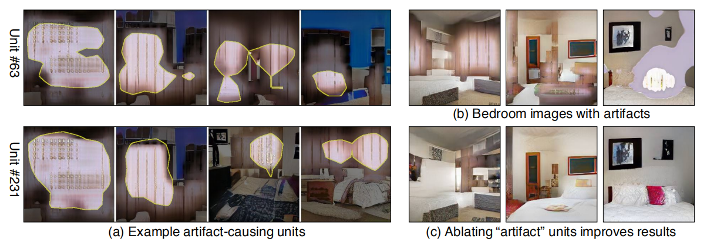

GAN的可视化方法
GAN有关的论文十分多，但是很少有研究能够回答GAN究竟是如何生成图像的。这篇论文结合语义分析方法，提出了一种解释GAN的框架。应用这个可视化框架，研究人员可以更好的理解GAN，并提高GAN的生成水平。作者通过下面两步来解决可视化的问题：
论文的baseline模型是unconditional的GAN。设输入为\(z\)，某一层feature map可表示为\(r=h(z)\)，最终的生成结果\(x=f(r)=f(h(z))=G(z)\)。现在的\(r\)代表一堆feature map，其尺寸为\(C\times H\times W\)。一般来说，\(H,W\)都要分别小于输入图片的高和宽。不妨设\(r\)的通道数为64，编码为\(r_0,...,r_{63}\)。这些feature map中，可能一些是用来生成树的，一些是用来生成房子的，还有一些是用来生成天空的。我们现在考虑一个具体的问题：究竟哪些feature map是用来生成树的？
设用来生成树的feature map集合为\(\{r_{tree}\}\)，剩下的集合为\(\{r_{notree}\}\)，那么可以将\(r\)分解为：
\(r=\{r_{tree},r_{notree}\}\)
现在的问题是去找到\(\{r_{tree}\}\)，即找到影响结果中树的生成的feature map。这一步用到了语义分割技术。首先，得到生成图片中树这一类别的语义分割图\(s_c(X)\)；枚举\(r_0,...,r_{63}\)，分别计算其与\(s_c(X)\)的交并比（IOU）。作者采用下面这种IOU计算方式，以\(r_0\)为例：第一步，将\(r_0\)尺寸调整到原图大小，得到\(r'_0\)；第二步，将\(r'_0\)按照一个阈值做二值化。关于阈值的选取，文中的做法是在验证集上找到能够使得平均交并比最大的阈值。上面的流程就是文中的这张图： 作者在1000张生成图片中，找到了10张平均交并比最大的feature map，效果如下图。可见这些feature map确实能够反映出某一类别的物体是如何被生成的。值得注意的是，这些feature map的位置只与分析的类别有关，而与输入的图像无关。 至此，上面的工作完成了Dissection的任务，下面进入Intervention的部分。如何衡量feature map对最终生成物体的重要程度？一个手段是将其失活再激活，再计算loss： 其中，失活是将一张feature map上的所有权值取0，激活是将所有权值变成\(k\)。但是这种方法只能计算单张feature map对结果的影响。实际上，feature map之间的关系是藕断丝连的，失活其中的一张，可能只会少一片树叶。那么如何才能完整去掉图片上的树呢？作者想到可以对其加权求和，训练权重使得loss最大，这样对应的失活图片就是没有树的，而激活图片就是生成出比原图更多棵树的。最终的方法如下： 上面介绍的Intervention过程体现为下面这张图：这篇文章的结果主要说明了这种可视化方法的应用方向，我就挑有意思的做笔记了。第一点，随着层数加深，GAN学习到了越来越细致的特征。
第二点，用来生成某一类别的feature map的数量与反映图片质量的SWD指标变化是一致的。所以可以凭借此衡量GAN的结果。 第三点，使用Intervention的方法消除杂点可以手动提高生成图片的质量。
第四点，可以手动编辑图像，例如减少图片中的窗户，树木等。